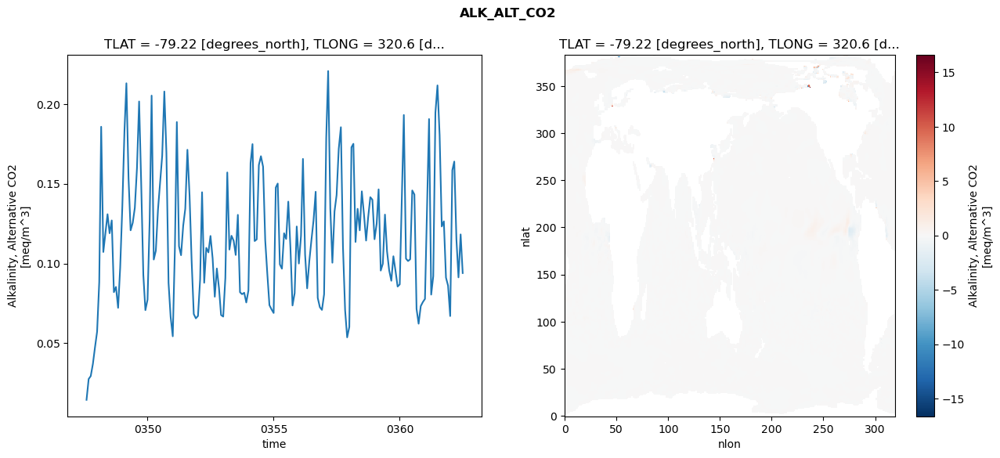
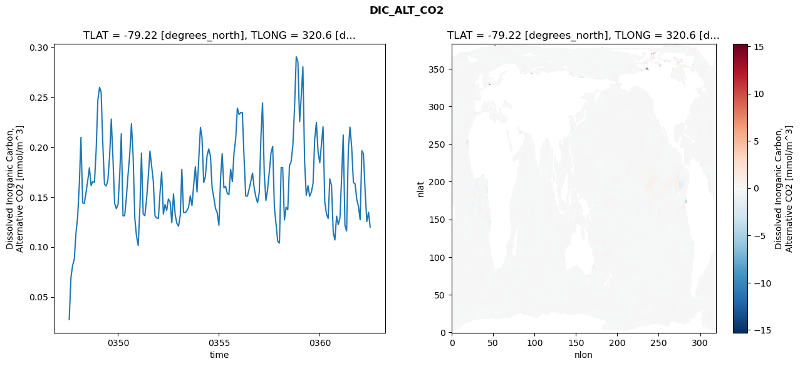
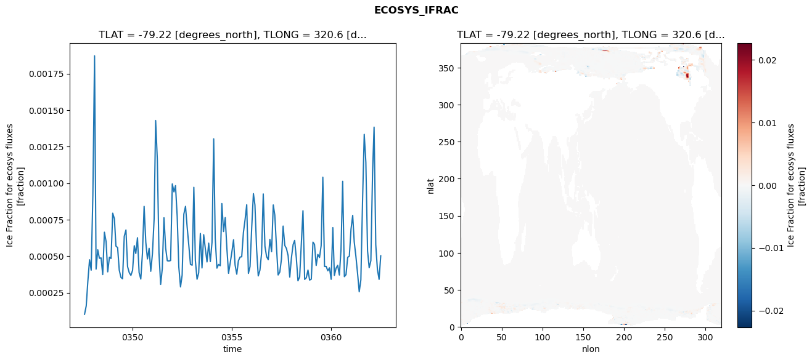
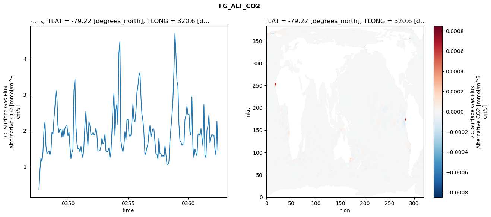

glb-dor_North_Atlantic_basin_027_1999-07-01_00110#
Simulation details#
Case: smyle.cdr-atlas-v0.glb-dor_North_Atlantic_basin_027_1999-07-01_00110.001
Basin: North_Atlantic_basin
Polygon: 27.0
Start date: 1999-07
Show code cell source Hide code cell source
import xarray as xr
import matplotlib.pyplot as plt
Show code cell source Hide code cell source
zarr_store = "/path/to/zarr/store"
# Parameters
zarr_store = "/global/cfs/projectdirs/m4746/Projects/Ocean-CDR-Atlas-v0/data/validation/smyle.cdr-atlas-v0.glb-dor_North_Atlantic_basin_027_1999-07-01_00110.001.validation.zarr"
Show code cell source Hide code cell source
%%time
ds_o = xr.open_zarr(zarr_store).compute()
ds_o
CPU times: user 659 ms, sys: 440 ms, total: 1.1 s
Wall time: 1.36 s
<xarray.Dataset> Size: 2MB
Dimensions: (nlat: 384, nlon: 320, time: 180)
Coordinates:
TLAT float64 8B -79.22
TLONG float64 8B 320.6
ULAT float64 8B -78.95
ULONG float64 8B 321.1
* time (time) object 1kB 0347-08-01 00:00:00 ... 0362-07-01 0...
z_t float32 4B 500.0
Dimensions without coordinates: nlat, nlon
Data variables:
ALK_ALT_CO2_diff (nlat, nlon) float32 492kB nan nan nan ... nan nan nan
ALK_ALT_CO2_rmse (time) float64 1kB 0.01449 0.02757 ... 0.1182 0.094
DIC_ALT_CO2_diff (nlat, nlon) float32 492kB nan nan nan ... nan nan nan
DIC_ALT_CO2_rmse (time) float64 1kB 0.02734 0.06924 ... 0.1347 0.12
ECOSYS_IFRAC_diff (nlat, nlon) float32 492kB nan nan nan ... nan nan nan
ECOSYS_IFRAC_rmse (time) float64 1kB 0.0001017 0.0001595 ... 0.0005026
FG_ALT_CO2_diff (nlat, nlon) float32 492kB nan nan nan ... nan nan nan
FG_ALT_CO2_rmse (time) float64 1kB 3.618e-06 9.224e-06 ... 1.454e-05xarray.Dataset
- nlat: 384
- nlon: 320
- time: 180
- TLAT()float64-79.22
- long_name :
- array of t-grid latitudes
- units :
- degrees_north
array(-79.22052261)
- TLONG()float64320.6
- long_name :
- array of t-grid longitudes
- units :
- degrees_east
array(320.56250892)
- ULAT()float64-78.95
- long_name :
- array of u-grid latitudes
- units :
- degrees_north
array(-78.95289509)
- ULONG()float64321.1
- long_name :
- array of u-grid longitudes
- units :
- degrees_east
array(321.12500894)
- time(time)object0347-08-01 00:00:00 ... 0362-07-...
- bounds :
- time_bound
- long_name :
- time
array([cftime.DatetimeNoLeap(347, 8, 1, 0, 0, 0, 0, has_year_zero=True), cftime.DatetimeNoLeap(347, 9, 1, 0, 0, 0, 0, has_year_zero=True), cftime.DatetimeNoLeap(347, 10, 1, 0, 0, 0, 0, has_year_zero=True), cftime.DatetimeNoLeap(347, 11, 1, 0, 0, 0, 0, has_year_zero=True), cftime.DatetimeNoLeap(347, 12, 1, 0, 0, 0, 0, has_year_zero=True), cftime.DatetimeNoLeap(348, 1, 1, 0, 0, 0, 0, has_year_zero=True), cftime.DatetimeNoLeap(348, 2, 1, 0, 0, 0, 0, has_year_zero=True), cftime.DatetimeNoLeap(348, 3, 1, 0, 0, 0, 0, has_year_zero=True), cftime.DatetimeNoLeap(348, 4, 1, 0, 0, 0, 0, has_year_zero=True), cftime.DatetimeNoLeap(348, 5, 1, 0, 0, 0, 0, has_year_zero=True), cftime.DatetimeNoLeap(348, 6, 1, 0, 0, 0, 0, has_year_zero=True), cftime.DatetimeNoLeap(348, 7, 1, 0, 0, 0, 0, has_year_zero=True), cftime.DatetimeNoLeap(348, 8, 1, 0, 0, 0, 0, has_year_zero=True), cftime.DatetimeNoLeap(348, 9, 1, 0, 0, 0, 0, has_year_zero=True), cftime.DatetimeNoLeap(348, 10, 1, 0, 0, 0, 0, has_year_zero=True), cftime.DatetimeNoLeap(348, 11, 1, 0, 0, 0, 0, has_year_zero=True), cftime.DatetimeNoLeap(348, 12, 1, 0, 0, 0, 0, has_year_zero=True), cftime.DatetimeNoLeap(349, 1, 1, 0, 0, 0, 0, has_year_zero=True), cftime.DatetimeNoLeap(349, 2, 1, 0, 0, 0, 0, has_year_zero=True), cftime.DatetimeNoLeap(349, 3, 1, 0, 0, 0, 0, has_year_zero=True), cftime.DatetimeNoLeap(349, 4, 1, 0, 0, 0, 0, has_year_zero=True), cftime.DatetimeNoLeap(349, 5, 1, 0, 0, 0, 0, has_year_zero=True), cftime.DatetimeNoLeap(349, 6, 1, 0, 0, 0, 0, has_year_zero=True), cftime.DatetimeNoLeap(349, 7, 1, 0, 0, 0, 0, has_year_zero=True), cftime.DatetimeNoLeap(349, 8, 1, 0, 0, 0, 0, has_year_zero=True), cftime.DatetimeNoLeap(349, 9, 1, 0, 0, 0, 0, has_year_zero=True), cftime.DatetimeNoLeap(349, 10, 1, 0, 0, 0, 0, has_year_zero=True), cftime.DatetimeNoLeap(349, 11, 1, 0, 0, 0, 0, has_year_zero=True), cftime.DatetimeNoLeap(349, 12, 1, 0, 0, 0, 0, has_year_zero=True), cftime.DatetimeNoLeap(350, 1, 1, 0, 0, 0, 0, has_year_zero=True), cftime.DatetimeNoLeap(350, 2, 1, 0, 0, 0, 0, has_year_zero=True), cftime.DatetimeNoLeap(350, 3, 1, 0, 0, 0, 0, has_year_zero=True), cftime.DatetimeNoLeap(350, 4, 1, 0, 0, 0, 0, has_year_zero=True), cftime.DatetimeNoLeap(350, 5, 1, 0, 0, 0, 0, has_year_zero=True), cftime.DatetimeNoLeap(350, 6, 1, 0, 0, 0, 0, has_year_zero=True), cftime.DatetimeNoLeap(350, 7, 1, 0, 0, 0, 0, has_year_zero=True), cftime.DatetimeNoLeap(350, 8, 1, 0, 0, 0, 0, has_year_zero=True), cftime.DatetimeNoLeap(350, 9, 1, 0, 0, 0, 0, has_year_zero=True), cftime.DatetimeNoLeap(350, 10, 1, 0, 0, 0, 0, has_year_zero=True), cftime.DatetimeNoLeap(350, 11, 1, 0, 0, 0, 0, has_year_zero=True), cftime.DatetimeNoLeap(350, 12, 1, 0, 0, 0, 0, has_year_zero=True), cftime.DatetimeNoLeap(351, 1, 1, 0, 0, 0, 0, has_year_zero=True), cftime.DatetimeNoLeap(351, 2, 1, 0, 0, 0, 0, has_year_zero=True), cftime.DatetimeNoLeap(351, 3, 1, 0, 0, 0, 0, has_year_zero=True), cftime.DatetimeNoLeap(351, 4, 1, 0, 0, 0, 0, has_year_zero=True), cftime.DatetimeNoLeap(351, 5, 1, 0, 0, 0, 0, has_year_zero=True), cftime.DatetimeNoLeap(351, 6, 1, 0, 0, 0, 0, has_year_zero=True), cftime.DatetimeNoLeap(351, 7, 1, 0, 0, 0, 0, has_year_zero=True), cftime.DatetimeNoLeap(351, 8, 1, 0, 0, 0, 0, has_year_zero=True), cftime.DatetimeNoLeap(351, 9, 1, 0, 0, 0, 0, has_year_zero=True), cftime.DatetimeNoLeap(351, 10, 1, 0, 0, 0, 0, has_year_zero=True), cftime.DatetimeNoLeap(351, 11, 1, 0, 0, 0, 0, has_year_zero=True), cftime.DatetimeNoLeap(351, 12, 1, 0, 0, 0, 0, has_year_zero=True), cftime.DatetimeNoLeap(352, 1, 1, 0, 0, 0, 0, has_year_zero=True), cftime.DatetimeNoLeap(352, 2, 1, 0, 0, 0, 0, has_year_zero=True), cftime.DatetimeNoLeap(352, 3, 1, 0, 0, 0, 0, has_year_zero=True), cftime.DatetimeNoLeap(352, 4, 1, 0, 0, 0, 0, has_year_zero=True), cftime.DatetimeNoLeap(352, 5, 1, 0, 0, 0, 0, has_year_zero=True), cftime.DatetimeNoLeap(352, 6, 1, 0, 0, 0, 0, has_year_zero=True), cftime.DatetimeNoLeap(352, 7, 1, 0, 0, 0, 0, has_year_zero=True), cftime.DatetimeNoLeap(352, 8, 1, 0, 0, 0, 0, has_year_zero=True), cftime.DatetimeNoLeap(352, 9, 1, 0, 0, 0, 0, has_year_zero=True), cftime.DatetimeNoLeap(352, 10, 1, 0, 0, 0, 0, has_year_zero=True), cftime.DatetimeNoLeap(352, 11, 1, 0, 0, 0, 0, has_year_zero=True), cftime.DatetimeNoLeap(352, 12, 1, 0, 0, 0, 0, has_year_zero=True), cftime.DatetimeNoLeap(353, 1, 1, 0, 0, 0, 0, has_year_zero=True), cftime.DatetimeNoLeap(353, 2, 1, 0, 0, 0, 0, has_year_zero=True), cftime.DatetimeNoLeap(353, 3, 1, 0, 0, 0, 0, has_year_zero=True), cftime.DatetimeNoLeap(353, 4, 1, 0, 0, 0, 0, has_year_zero=True), cftime.DatetimeNoLeap(353, 5, 1, 0, 0, 0, 0, has_year_zero=True), cftime.DatetimeNoLeap(353, 6, 1, 0, 0, 0, 0, has_year_zero=True), cftime.DatetimeNoLeap(353, 7, 1, 0, 0, 0, 0, has_year_zero=True), cftime.DatetimeNoLeap(353, 8, 1, 0, 0, 0, 0, has_year_zero=True), cftime.DatetimeNoLeap(353, 9, 1, 0, 0, 0, 0, has_year_zero=True), cftime.DatetimeNoLeap(353, 10, 1, 0, 0, 0, 0, has_year_zero=True), cftime.DatetimeNoLeap(353, 11, 1, 0, 0, 0, 0, has_year_zero=True), cftime.DatetimeNoLeap(353, 12, 1, 0, 0, 0, 0, has_year_zero=True), cftime.DatetimeNoLeap(354, 1, 1, 0, 0, 0, 0, has_year_zero=True), cftime.DatetimeNoLeap(354, 2, 1, 0, 0, 0, 0, has_year_zero=True), cftime.DatetimeNoLeap(354, 3, 1, 0, 0, 0, 0, has_year_zero=True), cftime.DatetimeNoLeap(354, 4, 1, 0, 0, 0, 0, has_year_zero=True), cftime.DatetimeNoLeap(354, 5, 1, 0, 0, 0, 0, has_year_zero=True), cftime.DatetimeNoLeap(354, 6, 1, 0, 0, 0, 0, has_year_zero=True), cftime.DatetimeNoLeap(354, 7, 1, 0, 0, 0, 0, has_year_zero=True), cftime.DatetimeNoLeap(354, 8, 1, 0, 0, 0, 0, has_year_zero=True), cftime.DatetimeNoLeap(354, 9, 1, 0, 0, 0, 0, has_year_zero=True), cftime.DatetimeNoLeap(354, 10, 1, 0, 0, 0, 0, has_year_zero=True), cftime.DatetimeNoLeap(354, 11, 1, 0, 0, 0, 0, has_year_zero=True), cftime.DatetimeNoLeap(354, 12, 1, 0, 0, 0, 0, has_year_zero=True), cftime.DatetimeNoLeap(355, 1, 1, 0, 0, 0, 0, has_year_zero=True), cftime.DatetimeNoLeap(355, 2, 1, 0, 0, 0, 0, has_year_zero=True), cftime.DatetimeNoLeap(355, 3, 1, 0, 0, 0, 0, has_year_zero=True), cftime.DatetimeNoLeap(355, 4, 1, 0, 0, 0, 0, has_year_zero=True), cftime.DatetimeNoLeap(355, 5, 1, 0, 0, 0, 0, has_year_zero=True), cftime.DatetimeNoLeap(355, 6, 1, 0, 0, 0, 0, has_year_zero=True), cftime.DatetimeNoLeap(355, 7, 1, 0, 0, 0, 0, has_year_zero=True), cftime.DatetimeNoLeap(355, 8, 1, 0, 0, 0, 0, has_year_zero=True), cftime.DatetimeNoLeap(355, 9, 1, 0, 0, 0, 0, has_year_zero=True), cftime.DatetimeNoLeap(355, 10, 1, 0, 0, 0, 0, has_year_zero=True), cftime.DatetimeNoLeap(355, 11, 1, 0, 0, 0, 0, has_year_zero=True), cftime.DatetimeNoLeap(355, 12, 1, 0, 0, 0, 0, has_year_zero=True), cftime.DatetimeNoLeap(356, 1, 1, 0, 0, 0, 0, has_year_zero=True), cftime.DatetimeNoLeap(356, 2, 1, 0, 0, 0, 0, has_year_zero=True), cftime.DatetimeNoLeap(356, 3, 1, 0, 0, 0, 0, has_year_zero=True), cftime.DatetimeNoLeap(356, 4, 1, 0, 0, 0, 0, has_year_zero=True), cftime.DatetimeNoLeap(356, 5, 1, 0, 0, 0, 0, has_year_zero=True), cftime.DatetimeNoLeap(356, 6, 1, 0, 0, 0, 0, has_year_zero=True), cftime.DatetimeNoLeap(356, 7, 1, 0, 0, 0, 0, has_year_zero=True), cftime.DatetimeNoLeap(356, 8, 1, 0, 0, 0, 0, has_year_zero=True), cftime.DatetimeNoLeap(356, 9, 1, 0, 0, 0, 0, has_year_zero=True), cftime.DatetimeNoLeap(356, 10, 1, 0, 0, 0, 0, has_year_zero=True), cftime.DatetimeNoLeap(356, 11, 1, 0, 0, 0, 0, has_year_zero=True), cftime.DatetimeNoLeap(356, 12, 1, 0, 0, 0, 0, has_year_zero=True), cftime.DatetimeNoLeap(357, 1, 1, 0, 0, 0, 0, has_year_zero=True), cftime.DatetimeNoLeap(357, 2, 1, 0, 0, 0, 0, has_year_zero=True), cftime.DatetimeNoLeap(357, 3, 1, 0, 0, 0, 0, has_year_zero=True), cftime.DatetimeNoLeap(357, 4, 1, 0, 0, 0, 0, has_year_zero=True), cftime.DatetimeNoLeap(357, 5, 1, 0, 0, 0, 0, has_year_zero=True), cftime.DatetimeNoLeap(357, 6, 1, 0, 0, 0, 0, has_year_zero=True), cftime.DatetimeNoLeap(357, 7, 1, 0, 0, 0, 0, has_year_zero=True), cftime.DatetimeNoLeap(357, 8, 1, 0, 0, 0, 0, has_year_zero=True), cftime.DatetimeNoLeap(357, 9, 1, 0, 0, 0, 0, has_year_zero=True), cftime.DatetimeNoLeap(357, 10, 1, 0, 0, 0, 0, has_year_zero=True), cftime.DatetimeNoLeap(357, 11, 1, 0, 0, 0, 0, has_year_zero=True), cftime.DatetimeNoLeap(357, 12, 1, 0, 0, 0, 0, has_year_zero=True), cftime.DatetimeNoLeap(358, 1, 1, 0, 0, 0, 0, has_year_zero=True), cftime.DatetimeNoLeap(358, 2, 1, 0, 0, 0, 0, has_year_zero=True), cftime.DatetimeNoLeap(358, 3, 1, 0, 0, 0, 0, has_year_zero=True), cftime.DatetimeNoLeap(358, 4, 1, 0, 0, 0, 0, has_year_zero=True), cftime.DatetimeNoLeap(358, 5, 1, 0, 0, 0, 0, has_year_zero=True), cftime.DatetimeNoLeap(358, 6, 1, 0, 0, 0, 0, has_year_zero=True), cftime.DatetimeNoLeap(358, 7, 1, 0, 0, 0, 0, has_year_zero=True), cftime.DatetimeNoLeap(358, 8, 1, 0, 0, 0, 0, has_year_zero=True), cftime.DatetimeNoLeap(358, 9, 1, 0, 0, 0, 0, has_year_zero=True), cftime.DatetimeNoLeap(358, 10, 1, 0, 0, 0, 0, has_year_zero=True), cftime.DatetimeNoLeap(358, 11, 1, 0, 0, 0, 0, has_year_zero=True), cftime.DatetimeNoLeap(358, 12, 1, 0, 0, 0, 0, has_year_zero=True), cftime.DatetimeNoLeap(359, 1, 1, 0, 0, 0, 0, has_year_zero=True), cftime.DatetimeNoLeap(359, 2, 1, 0, 0, 0, 0, has_year_zero=True), cftime.DatetimeNoLeap(359, 3, 1, 0, 0, 0, 0, has_year_zero=True), cftime.DatetimeNoLeap(359, 4, 1, 0, 0, 0, 0, has_year_zero=True), cftime.DatetimeNoLeap(359, 5, 1, 0, 0, 0, 0, has_year_zero=True), cftime.DatetimeNoLeap(359, 6, 1, 0, 0, 0, 0, has_year_zero=True), cftime.DatetimeNoLeap(359, 7, 1, 0, 0, 0, 0, has_year_zero=True), cftime.DatetimeNoLeap(359, 8, 1, 0, 0, 0, 0, has_year_zero=True), cftime.DatetimeNoLeap(359, 9, 1, 0, 0, 0, 0, has_year_zero=True), cftime.DatetimeNoLeap(359, 10, 1, 0, 0, 0, 0, has_year_zero=True), cftime.DatetimeNoLeap(359, 11, 1, 0, 0, 0, 0, has_year_zero=True), cftime.DatetimeNoLeap(359, 12, 1, 0, 0, 0, 0, has_year_zero=True), cftime.DatetimeNoLeap(360, 1, 1, 0, 0, 0, 0, has_year_zero=True), cftime.DatetimeNoLeap(360, 2, 1, 0, 0, 0, 0, has_year_zero=True), cftime.DatetimeNoLeap(360, 3, 1, 0, 0, 0, 0, has_year_zero=True), cftime.DatetimeNoLeap(360, 4, 1, 0, 0, 0, 0, has_year_zero=True), cftime.DatetimeNoLeap(360, 5, 1, 0, 0, 0, 0, has_year_zero=True), cftime.DatetimeNoLeap(360, 6, 1, 0, 0, 0, 0, has_year_zero=True), cftime.DatetimeNoLeap(360, 7, 1, 0, 0, 0, 0, has_year_zero=True), cftime.DatetimeNoLeap(360, 8, 1, 0, 0, 0, 0, has_year_zero=True), cftime.DatetimeNoLeap(360, 9, 1, 0, 0, 0, 0, has_year_zero=True), cftime.DatetimeNoLeap(360, 10, 1, 0, 0, 0, 0, has_year_zero=True), cftime.DatetimeNoLeap(360, 11, 1, 0, 0, 0, 0, has_year_zero=True), cftime.DatetimeNoLeap(360, 12, 1, 0, 0, 0, 0, has_year_zero=True), cftime.DatetimeNoLeap(361, 1, 1, 0, 0, 0, 0, has_year_zero=True), cftime.DatetimeNoLeap(361, 2, 1, 0, 0, 0, 0, has_year_zero=True), cftime.DatetimeNoLeap(361, 3, 1, 0, 0, 0, 0, has_year_zero=True), cftime.DatetimeNoLeap(361, 4, 1, 0, 0, 0, 0, has_year_zero=True), cftime.DatetimeNoLeap(361, 5, 1, 0, 0, 0, 0, has_year_zero=True), cftime.DatetimeNoLeap(361, 6, 1, 0, 0, 0, 0, has_year_zero=True), cftime.DatetimeNoLeap(361, 7, 1, 0, 0, 0, 0, has_year_zero=True), cftime.DatetimeNoLeap(361, 8, 1, 0, 0, 0, 0, has_year_zero=True), cftime.DatetimeNoLeap(361, 9, 1, 0, 0, 0, 0, has_year_zero=True), cftime.DatetimeNoLeap(361, 10, 1, 0, 0, 0, 0, has_year_zero=True), cftime.DatetimeNoLeap(361, 11, 1, 0, 0, 0, 0, has_year_zero=True), cftime.DatetimeNoLeap(361, 12, 1, 0, 0, 0, 0, has_year_zero=True), cftime.DatetimeNoLeap(362, 1, 1, 0, 0, 0, 0, has_year_zero=True), cftime.DatetimeNoLeap(362, 2, 1, 0, 0, 0, 0, has_year_zero=True), cftime.DatetimeNoLeap(362, 3, 1, 0, 0, 0, 0, has_year_zero=True), cftime.DatetimeNoLeap(362, 4, 1, 0, 0, 0, 0, has_year_zero=True), cftime.DatetimeNoLeap(362, 5, 1, 0, 0, 0, 0, has_year_zero=True), cftime.DatetimeNoLeap(362, 6, 1, 0, 0, 0, 0, has_year_zero=True), cftime.DatetimeNoLeap(362, 7, 1, 0, 0, 0, 0, has_year_zero=True)], dtype=object) - z_t()float32500.0
- long_name :
- depth from surface to midpoint of layer
- positive :
- down
- units :
- centimeters
- valid_max :
- 537500.0
- valid_min :
- 500.0
array(500., dtype=float32)
- ALK_ALT_CO2_diff(nlat, nlon)float32nan nan nan nan ... nan nan nan nan
- cell_methods :
- time: mean
- grid_loc :
- 3111
- long_name :
- Alkalinity, Alternative CO2
- units :
- meq/m^3
array([[ nan, nan, nan, ..., nan, nan, nan], [ nan, nan, nan, ..., nan, nan, nan], [-0.00097656, -0.00292969, 0.01220703, ..., nan, nan, nan], ..., [ nan, nan, nan, ..., nan, nan, nan], [ nan, nan, nan, ..., nan, nan, nan], [ nan, nan, nan, ..., nan, nan, nan]], dtype=float32) - ALK_ALT_CO2_rmse(time)float640.01449 0.02757 ... 0.1182 0.094
- cell_methods :
- time: mean
- grid_loc :
- 3111
- long_name :
- Alkalinity, Alternative CO2
- units :
- meq/m^3
array([0.01448868, 0.0275691 , 0.02940985, 0.03700054, 0.04727027, 0.05724756, 0.08835033, 0.18573406, 0.10720328, 0.11908451, 0.1308805 , 0.11896096, 0.1269914 , 0.08200413, 0.085286 , 0.07218652, 0.09731648, 0.1356106 , 0.18312255, 0.21299437, 0.15341916, 0.12081288, 0.12556366, 0.13491813, 0.15982495, 0.20158411, 0.15058651, 0.09284272, 0.07074876, 0.07732133, 0.12743746, 0.20527556, 0.10248963, 0.10801935, 0.13369103, 0.15007483, 0.1675418 , 0.20783577, 0.16945516, 0.08779077, 0.06655669, 0.05435325, 0.10963022, 0.18868799, 0.11086324, 0.1051948 , 0.1236844 , 0.13430531, 0.17130271, 0.1425736 , 0.10171337, 0.06829256, 0.06560497, 0.06708997, 0.09000465, 0.14466538, 0.08791321, 0.10980165, 0.10693887, 0.11724859, 0.10319543, 0.07915938, 0.09684163, 0.08455668, 0.0676693 , 0.06670196, 0.0908849 , 0.15707702, 0.10872065, 0.11737241, 0.11429875, 0.10534424, 0.13048242, 0.08196512, 0.08074081, 0.08164455, 0.07553948, 0.08309552, 0.16302875, 0.17484677, 0.1140708 , 0.1151106 , 0.16174835, 0.16727548, 0.16067967, 0.11454525, 0.09379563, 0.07386522, 0.07126517, 0.06896059, 0.1476679 , 0.15012246, 0.09942863, 0.09673617, 0.1189466 , 0.1153821 , 0.13879143, 0.10980702, 0.07366662, 0.08137839, 0.12320071, 0.09997778, 0.11737032, 0.16557191, 0.10564075, 0.08440669, 0.10144929, 0.11434502, 0.12693319, 0.14497456, 0.07842351, 0.07257301, 0.07088489, 0.08066049, 0.17884288, 0.22067861, 0.13442989, 0.10047453, 0.13266097, 0.14291207, 0.17191361, 0.18545375, 0.11071321, 0.07078718, 0.05367865, 0.06021099, 0.17284395, 0.17504146, 0.11350583, 0.13427541, 0.12078274, 0.14522967, 0.13096715, 0.11436969, 0.12901606, 0.14157347, 0.13999679, 0.11522257, 0.12494535, 0.14647189, 0.0955555 , 0.09984976, 0.13065877, 0.10762724, 0.0956619 , 0.08917272, 0.10452885, 0.09523581, 0.08553724, 0.08688659, 0.14195474, 0.1931116 , 0.10305439, 0.10154371, 0.10264192, 0.14579925, 0.14326884, 0.07151992, 0.06224961, 0.07326585, 0.07578329, 0.07777322, 0.13676206, 0.19056971, 0.08048675, 0.092033 , 0.19449833, 0.21166849, 0.18041462, 0.12320106, 0.12644466, 0.09111232, 0.08613752, 0.06703611, 0.15851749, 0.16390213, 0.11519971, 0.09129375, 0.11822993, 0.0939955 ]) - DIC_ALT_CO2_diff(nlat, nlon)float32nan nan nan nan ... nan nan nan nan
- cell_methods :
- time: mean
- grid_loc :
- 3111
- long_name :
- Dissolved Inorganic Carbon, Alternative CO2
- units :
- mmol/m^3
array([[ nan, nan, nan, ..., nan, nan, nan], [ nan, nan, nan, ..., nan, nan, nan], [-0.00048828, 0. , 0.0078125 , ..., nan, nan, nan], ..., [ nan, nan, nan, ..., nan, nan, nan], [ nan, nan, nan, ..., nan, nan, nan], [ nan, nan, nan, ..., nan, nan, nan]], dtype=float32) - DIC_ALT_CO2_rmse(time)float640.02734 0.06924 ... 0.1347 0.12
- cell_methods :
- time: mean
- grid_loc :
- 3111
- long_name :
- Dissolved Inorganic Carbon, Alternative CO2
- units :
- mmol/m^3
array([0.02734433, 0.06923796, 0.08135417, 0.08796609, 0.11368206, 0.1304959 , 0.16437152, 0.20958215, 0.14409987, 0.14360481, 0.15458744, 0.16602892, 0.17926365, 0.16153612, 0.16555925, 0.16481171, 0.19649411, 0.24721148, 0.25977279, 0.25506119, 0.20262076, 0.16266559, 0.16097754, 0.16682294, 0.1903809 , 0.22795606, 0.18868206, 0.14348298, 0.13836273, 0.14237216, 0.17279997, 0.21338847, 0.13104251, 0.1312994 , 0.14982108, 0.17230214, 0.19286514, 0.22347651, 0.19075358, 0.12847063, 0.11083709, 0.10155328, 0.13977856, 0.19398946, 0.13297751, 0.13128886, 0.14766377, 0.16948441, 0.19604169, 0.18110991, 0.16580599, 0.13111192, 0.12895618, 0.12868139, 0.15508373, 0.17503468, 0.13298199, 0.14244856, 0.13671256, 0.14798322, 0.14514722, 0.12429247, 0.15307205, 0.13234865, 0.12361819, 0.12080421, 0.13190377, 0.1776815 , 0.13457073, 0.13423968, 0.13639834, 0.13957271, 0.15110156, 0.14149403, 0.16148453, 0.18040118, 0.15501426, 0.18668706, 0.21962889, 0.2091768 , 0.16441347, 0.17043018, 0.19136806, 0.19808836, 0.1909201 , 0.15849491, 0.14930837, 0.1384144 , 0.13422935, 0.12173163, 0.17031685, 0.19327885, 0.15917763, 0.16069167, 0.15372945, 0.15236294, 0.17769593, 0.16549747, 0.19408435, 0.20878797, 0.23897045, 0.23244129, 0.23453926, 0.23457895, 0.18904809, 0.15105055, 0.15082137, 0.1577303 , 0.16557061, 0.17393775, 0.15889935, 0.14993612, 0.14427389, 0.15466296, 0.21142844, 0.24425065, 0.1738854 , 0.14656151, 0.15764016, 0.17494568, 0.1939341 , 0.20079098, 0.13996094, 0.12249193, 0.10572496, 0.10384598, 0.1796135 , 0.17929704, 0.12702185, 0.13981651, 0.13720953, 0.18145595, 0.18539678, 0.20196131, 0.23929292, 0.29037963, 0.28524929, 0.22534425, 0.25208612, 0.2803773 , 0.18590085, 0.15164611, 0.16132396, 0.15071546, 0.15489377, 0.16349652, 0.2080806 , 0.22456821, 0.19471706, 0.18426776, 0.20370186, 0.22035805, 0.14534548, 0.13311927, 0.12846729, 0.16809385, 0.16169633, 0.11465946, 0.1069395 , 0.13082936, 0.12229033, 0.12911762, 0.1716866 , 0.21215122, 0.12171848, 0.11594451, 0.19748768, 0.21998252, 0.19984742, 0.16449282, 0.16320477, 0.14757301, 0.14055266, 0.12730008, 0.19629901, 0.19334847, 0.1567028 , 0.12553792, 0.13472779, 0.11995081]) - ECOSYS_IFRAC_diff(nlat, nlon)float32nan nan nan nan ... nan nan nan nan
- cell_methods :
- time: mean
- grid_loc :
- 2110
- long_name :
- Ice Fraction for ecosys fluxes
- units :
- fraction
array([[ nan, nan, nan, ..., nan, nan, nan], [ nan, nan, nan, ..., nan, nan, nan], [1.0132790e-05, 1.7285347e-06, 1.6868114e-05, ..., nan, nan, nan], ..., [ nan, nan, nan, ..., nan, nan, nan], [ nan, nan, nan, ..., nan, nan, nan], [ nan, nan, nan, ..., nan, nan, nan]], dtype=float32) - ECOSYS_IFRAC_rmse(time)float640.0001017 0.0001595 ... 0.0005026
- cell_methods :
- time: mean
- grid_loc :
- 2110
- long_name :
- Ice Fraction for ecosys fluxes
- units :
- fraction
array([0.0001017 , 0.00015947, 0.00032922, 0.00047505, 0.0004039 , 0.00091737, 0.0018717 , 0.00041117, 0.00054334, 0.00048503, 0.00048794, 0.00037375, 0.00066364, 0.00060017, 0.00039251, 0.00049221, 0.00048412, 0.00079396, 0.00075585, 0.00056888, 0.00055853, 0.00040439, 0.00035452, 0.0003447 , 0.00063593, 0.000679 , 0.00042819, 0.00038636, 0.00036818, 0.00040273, 0.00057141, 0.00051815, 0.00062595, 0.00038702, 0.00034311, 0.00051776, 0.00084055, 0.00059553, 0.00048093, 0.00055328, 0.00039595, 0.00051628, 0.00075586, 0.0014284 , 0.00116005, 0.00052189, 0.00030647, 0.00041477, 0.00076281, 0.00055505, 0.00046838, 0.00046645, 0.00047013, 0.00099446, 0.00093996, 0.00098249, 0.00077214, 0.00042485, 0.00028922, 0.00036971, 0.00078741, 0.00084085, 0.00069941, 0.00057236, 0.00044322, 0.00043797, 0.00097123, 0.00047054, 0.00034181, 0.00038532, 0.00065519, 0.00041899, 0.00064681, 0.00054813, 0.00046046, 0.00058884, 0.00046276, 0.00059445, 0.00130329, 0.00062196, 0.00041767, 0.00044308, 0.00043441, 0.00086006, 0.00066839, 0.00076385, 0.00055475, 0.0003825 , 0.00045188, 0.00052799, 0.00061208, 0.0004397 , 0.00037629, 0.000468 , 0.00049368, 0.0004956 , 0.00066053, 0.00075028, 0.00085194, 0.00038175, 0.00042883, 0.00069762, 0.00092789, 0.00085024, 0.00054728, 0.00036433, 0.0004043 , 0.0005196 , 0.00092577, 0.00056793, 0.00049659, 0.00047532, 0.00061482, 0.00053039, 0.00085041, 0.00078171, 0.00056274, 0.00037095, 0.00039058, 0.00047865, 0.00070557, 0.00057307, 0.00055252, 0.00050356, 0.00035632, 0.00048951, 0.00057898, 0.00060743, 0.00048698, 0.00033081, 0.00035784, 0.00057646, 0.00081079, 0.00034074, 0.00035166, 0.00040455, 0.00033612, 0.00034251, 0.00059584, 0.00058066, 0.00043598, 0.00051168, 0.00049038, 0.00057166, 0.00104048, 0.000429 , 0.00042993, 0.00039952, 0.00042 , 0.00034148, 0.0006951 , 0.00036786, 0.00041721, 0.00043699, 0.00037069, 0.00054343, 0.00101236, 0.00035956, 0.00037297, 0.00049204, 0.00049938, 0.00068428, 0.00077897, 0.00059773, 0.00049794, 0.00038371, 0.00025578, 0.00033705, 0.00087597, 0.00133402, 0.00114229, 0.00053543, 0.00042043, 0.00046898, 0.00107175, 0.00138348, 0.00057829, 0.00040977, 0.00034116, 0.00050263]) - FG_ALT_CO2_diff(nlat, nlon)float32nan nan nan nan ... nan nan nan nan
- cell_methods :
- time: mean
- grid_loc :
- 2110
- long_name :
- DIC Surface Gas Flux, Alternative CO2
- units :
- mmol/m^3 cm/s
array([[ nan, nan, nan, ..., nan, nan, nan], [ nan, nan, nan, ..., nan, nan, nan], [-3.2835032e-09, 3.8344297e-09, 8.4649230e-09, ..., nan, nan, nan], ..., [ nan, nan, nan, ..., nan, nan, nan], [ nan, nan, nan, ..., nan, nan, nan], [ nan, nan, nan, ..., nan, nan, nan]], dtype=float32) - FG_ALT_CO2_rmse(time)float643.618e-06 9.224e-06 ... 1.454e-05
- cell_methods :
- time: mean
- grid_loc :
- 2110
- long_name :
- DIC Surface Gas Flux, Alternative CO2
- units :
- mmol/m^3 cm/s
array([3.61841223e-06, 9.22390971e-06, 1.24527564e-05, 1.13775579e-05, 1.40319227e-05, 2.01877893e-05, 2.24713548e-05, 1.58304737e-05, 1.36502429e-05, 1.38641442e-05, 1.43429828e-05, 1.32084052e-05, 1.44112184e-05, 1.96116252e-05, 1.91433438e-05, 2.33313514e-05, 2.68523139e-05, 3.12750236e-05, 2.90011486e-05, 2.15188523e-05, 1.94431755e-05, 2.03677572e-05, 2.02912184e-05, 1.82208076e-05, 2.04206522e-05, 1.83809280e-05, 2.06319080e-05, 2.12442232e-05, 2.14525382e-05, 1.85711152e-05, 1.95951832e-05, 1.56616609e-05, 1.22338972e-05, 1.39066269e-05, 1.47431486e-05, 3.11144489e-05, 3.42933077e-05, 2.11463156e-05, 1.64765194e-05, 1.48883409e-05, 1.50069344e-05, 1.40564005e-05, 1.56185649e-05, 1.37171662e-05, 1.24537854e-05, 1.57211875e-05, 2.16444987e-05, 2.54735671e-05, 1.96482200e-05, 1.59239902e-05, 2.25158511e-05, 2.13667382e-05, 1.88558075e-05, 1.88990622e-05, 1.94111245e-05, 1.87073441e-05, 1.92400234e-05, 2.06326456e-05, 1.89069381e-05, 1.42898992e-05, 1.43469578e-05, 1.44729075e-05, 1.55527335e-05, 1.78910677e-05, 1.63824543e-05, 1.66855431e-05, 1.90506401e-05, 1.43567402e-05, 1.41063182e-05, 1.41750138e-05, 1.51976387e-05, 1.23877243e-05, 1.39575729e-05, 1.98670193e-05, 2.62790575e-05, 3.03867472e-05, 1.86387007e-05, 2.58569932e-05, 2.74781042e-05, 2.16623397e-05, ... 3.52285094e-05, 3.61615955e-05, 2.91465749e-05, 2.46321871e-05, 2.28074811e-05, 1.93189031e-05, 1.32118203e-05, 1.38811686e-05, 1.52990934e-05, 1.63186550e-05, 1.93698994e-05, 2.14169227e-05, 1.82657587e-05, 1.95398417e-05, 2.05628691e-05, 2.04340510e-05, 1.69826972e-05, 1.35988343e-05, 1.34525162e-05, 1.21375789e-05, 1.79300366e-05, 1.36632883e-05, 1.35378125e-05, 1.27635176e-05, 1.31823418e-05, 1.27560895e-05, 1.57796033e-05, 1.34939283e-05, 1.07620679e-05, 1.05707175e-05, 1.13651131e-05, 1.71432368e-05, 2.07324026e-05, 2.41851994e-05, 2.87377409e-05, 3.69173646e-05, 4.70336596e-05, 4.11214077e-05, 3.37010097e-05, 3.25342634e-05, 2.18807099e-05, 1.72419143e-05, 1.68428432e-05, 1.59218528e-05, 1.62589914e-05, 1.63018712e-05, 2.31122741e-05, 2.43031947e-05, 2.68694559e-05, 2.44430701e-05, 2.46885805e-05, 1.96909824e-05, 1.87745901e-05, 2.93714980e-05, 1.53027076e-05, 1.24870797e-05, 1.48544054e-05, 1.38395165e-05, 1.30020602e-05, 1.88945212e-05, 1.92173360e-05, 1.86779864e-05, 2.05748214e-05, 1.83024520e-05, 1.57053720e-05, 2.73203332e-05, 1.32272497e-05, 1.24980158e-05, 2.01256414e-05, 2.13631010e-05, 2.44541121e-05, 1.66021358e-05, 1.81289700e-05, 1.90392601e-05, 1.86365278e-05, 1.88167604e-05, 1.48008112e-05, 1.32280636e-05, 2.26034613e-05, 1.45427165e-05])
- timePandasIndex
PandasIndex(CFTimeIndex([0347-08-01 00:00:00, 0347-09-01 00:00:00, 0347-10-01 00:00:00, 0347-11-01 00:00:00, 0347-12-01 00:00:00, 0348-01-01 00:00:00, 0348-02-01 00:00:00, 0348-03-01 00:00:00, 0348-04-01 00:00:00, 0348-05-01 00:00:00, ... 0361-10-01 00:00:00, 0361-11-01 00:00:00, 0361-12-01 00:00:00, 0362-01-01 00:00:00, 0362-02-01 00:00:00, 0362-03-01 00:00:00, 0362-04-01 00:00:00, 0362-05-01 00:00:00, 0362-06-01 00:00:00, 0362-07-01 00:00:00], dtype='object', length=180, calendar='noleap', freq='MS'))
Show code cell source Hide code cell source
variables = [v[:-5] for v in ds_o.variables if "_rmse" in v]
Show code cell source Hide code cell source
plt.rcParams.update({'figure.max_open_warning': 0})
for v in variables:
fig, axs = plt.subplots(1, 2, figsize=(15, 6))
ds_o[f"{v}_rmse"].plot(ax=axs[0])
ds_o[f"{v}_diff"].plot(ax=axs[1])
plt.suptitle(v, fontweight="bold")



